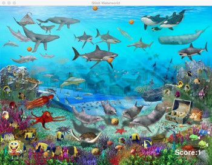
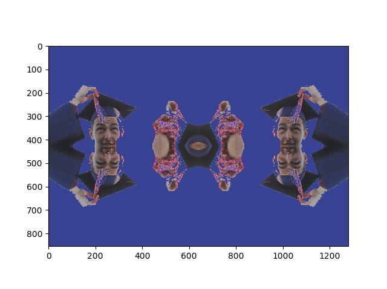
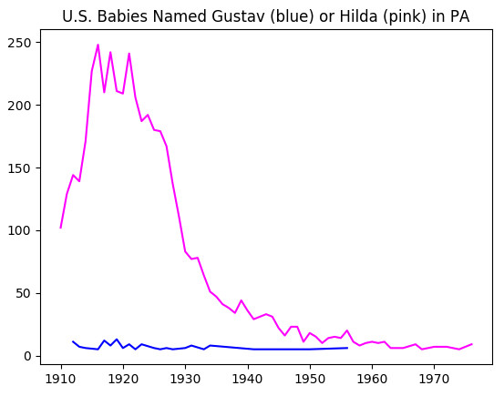
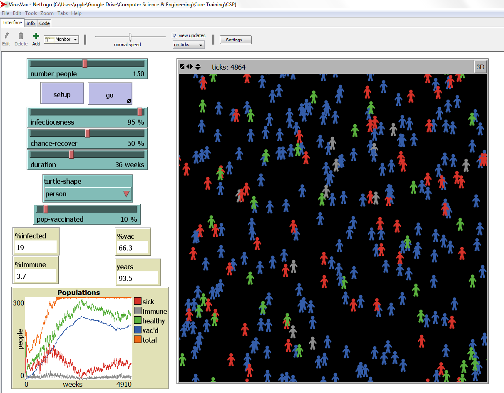

| Home | Portfolio | About Me |
This is my Portfolio Page!


Scratch Assignments: Click on the icons to see the games
 Piano Remix |
This is was a remix assignment where we took an existing simple piano scratch project and extended it to record a single song. We wanted to go further and have it save complete songs, but ran into a Scratch limitation trying to deal with lists of lists |
| Daily Set Solver |
In this assignment, Kenon and I attempted to create a
set game solver. See the Daily Set Puzzle website for details. While we have come up with a reasonable interface for setting the initial conditions for a set of 12 cards, we again ran into issues dealing with the limitations of Scratch. We will use this prototype later, to complete in Python |
App Inventor Assignments: Click on the icons to download the .aia files
 King 8-Ball Tweeter |
This is my first App Inventor remix. John and I started with instructions for a text based 8-ball simulation using an accelerometer, then extended it to use text to speach, and finally added some recent political tweets and a modified "King Tweeter" graphic. You can download an .aia (app inventor) export of this assignment and import into app inventor to play with. |
Python Assignments: Click on the icons to access the code
Wonderlust Lake |
You're sitting bored at your desk and decide to search for vaction spots. You find Wonderlust Lake in the Great North... bucket list! In this assignment, Emily and I turned our mutual interest in the outdoors into an interactive story using Python to manage branching within the story. Built from a process from story board to flowchart to Python code, this is a good introductory assignment to work though some of the basic features of Python. |
|  Spongebob Waterworld | This is a python remix assignment. For this assignment I started with a pygame version of Space Invaders, and remixed it into a SpongeBob - collect pirate gold game that I have been using in a Greenfoot context. Unfortunately, the game requires the pygame package, and I developed it on a Mac (OSX). I have not yet fully installed on windows, but you can download the complete zip file with all the resources here. You can also click on the icon to download the main driver as a .py file |
|  1.4.7 Image Manipulation |
In this assignment, we used matplotlib.pyplot to manipulate images at the bit level.
Click on the Image Manipulation link to see the code. Note that the individual manipulations are written as python functions. You can right click on either the input
image (top) or output image (bottom)to see the image at full scale. Unfortunately in this revision I was unable to save the image at the same resolution as the original image. The source code also contains a pixelate function that has been tested, but was not applied to this image. |
|  1.4.7 Big Data | The purpose of this assignment was to explore reading and converting data from one or more CSV files, and plotting in interesting ways. To make this data more useful, I will have to learn syntax for multi-dimensional dictionaries.You can download the data files here |
Various Other Assignments
|  Netlogo Remix | Netlogo is a simulation tool with it's own programmng language. In this example remix of a virus simulation that is included with Netlogo, Rob and I added additional parameters to identify a certain percent of the population that was vaxinated at birth, and some support code. We modified the simulation assumptions as follows:
Assumption: You vax child at birth |